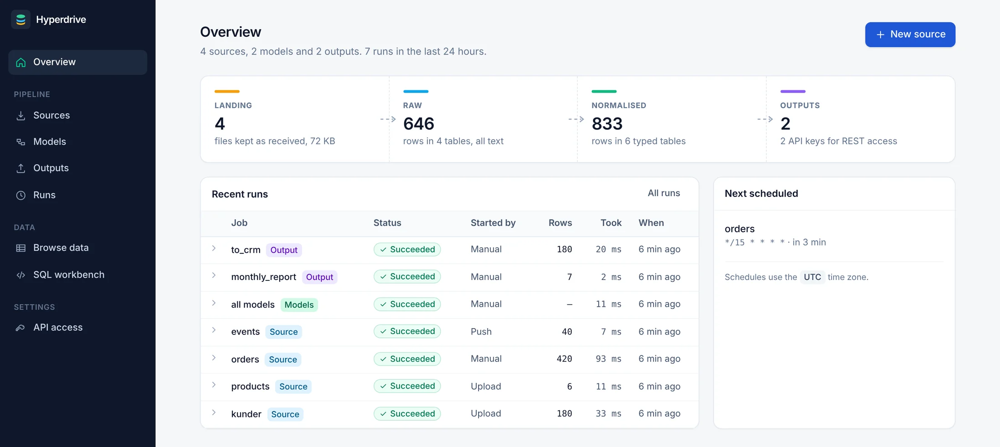
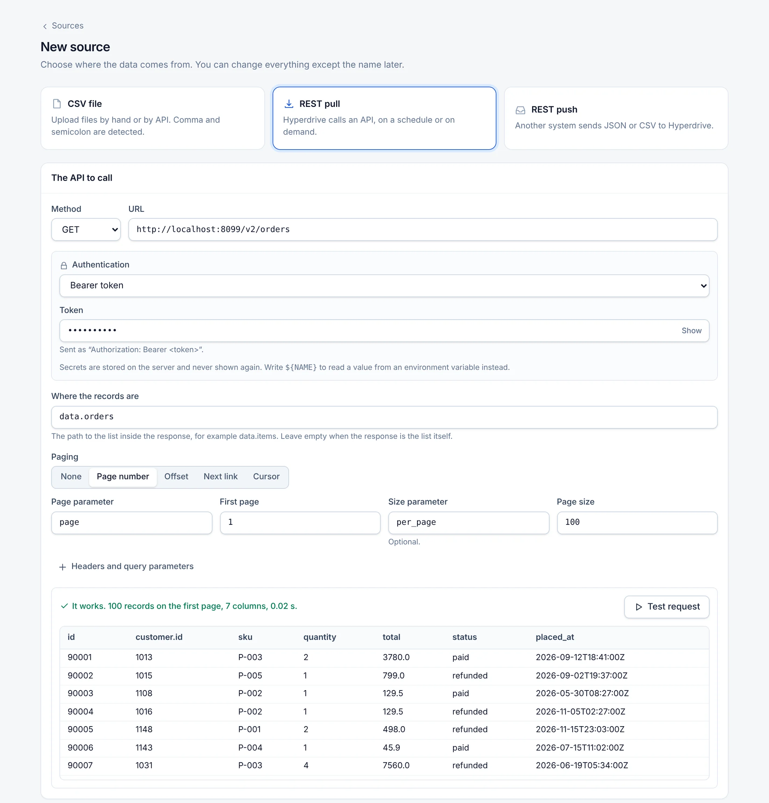
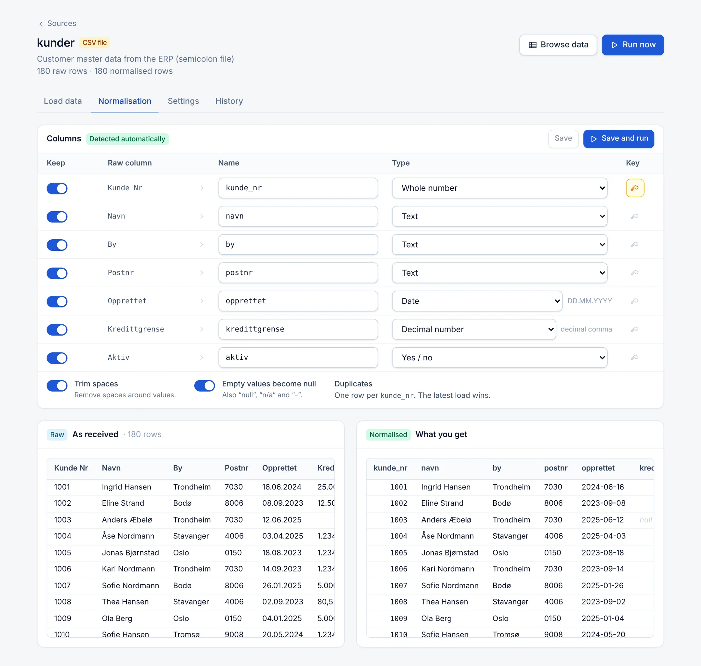
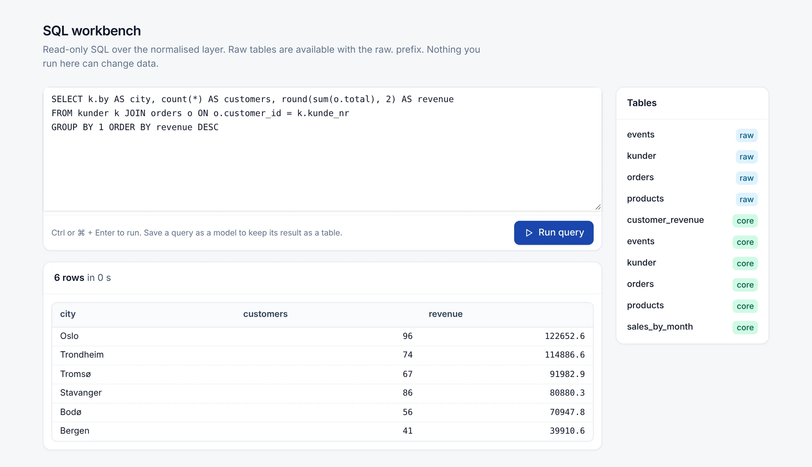
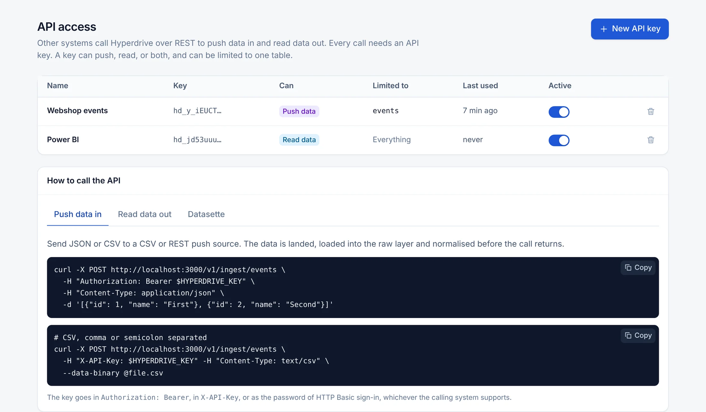
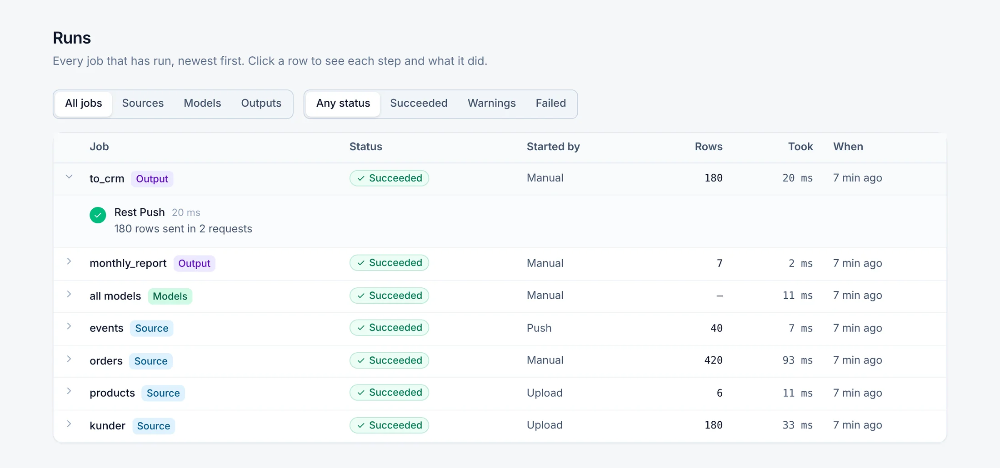
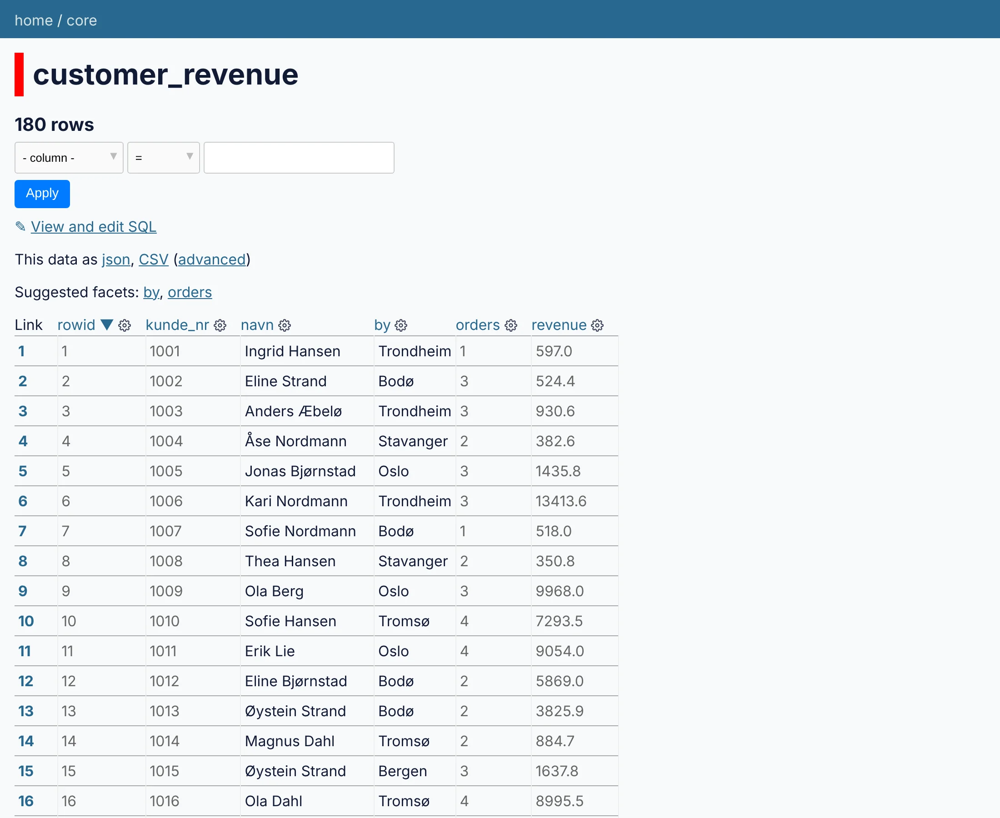
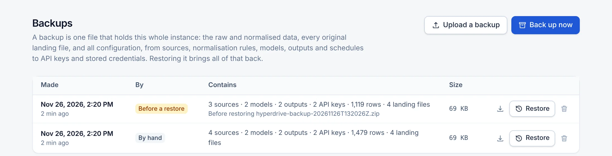

Self-hosted data platform
Your everyday data pipelines, on one small server.
Hyperdrive does the extract, load and transform work that usually ends up in AWS Glue or Microsoft Fabric. It runs on your own machine, keeps everything in SQLite, and is set up entirely in the browser.


The pipeline
Five steps, and you can look inside every one.
Data moves through the same stages every time. Nothing is thrown away on the way in, so a rule can change tomorrow and the tables are rebuilt from what actually arrived.
Landing
Kept as received
Every file and API response is stored exactly as it arrived.
Raw
Loaded as text
One table per source, original column names, every value as text.
Normalised
Typed and clean
Clean names, real types, ISO dates, one row per key.
Models
Shaped with SQL
SELECT statements kept as tables, for joins and aggregates.
Out
Delivered
REST, CSV files and pushes to other systems.
In
Files and APIs in, without writing a connector.
Upload a CSV, point Hyperdrive at a REST API, or let another system push to it. The form makes a test call and shows the first records before anything is saved.
- CSV with comma or semicolon. The delimiter and the encoding are detected.
- REST APIs pulled on a schedule, with paging by page number, offset, next link or cursor.
- JSON or CSV pushed in over REST with an API key.
- Sign-in for the APIs you call: bearer token, basic, API key or OAuth 2.0 client credentials.

Normalise
Messy columns become typed tables, and you watch it happen.
Types are detected from the data, and every column can be overridden. A before and after preview shows what the rules do to real rows.
- “Kunde Nr” becomes kunde_nr. Names are made safe to query.
- 1.234,56 becomes 1234.56. Decimal commas are understood per column.
- 05.01.2024 becomes 2024-01-05. One date format is chosen per column.
- 0150 stays text. A leading zero means an identifier.
- A value that does not fit becomes null and is counted. A bad row never stops a load.

Models
Joins and aggregates are plain SQL.
Try a query in the workbench, then save it as a model. Hyperdrive keeps the result as a table and rebuilds it after every source run.
- A read-only workbench over the raw and the normalised tables.
- Models are rebuilt after every source run, so they follow the data.
- No new language to learn. If you can write SELECT, you can model.

Out
Hand clean data to whatever needs it next.
Every table is available over REST the moment it exists. Files and pushes go out on a schedule, or right after the source they depend on has run.
- Any table as JSON or CSV over REST, with filters, sorting and search.
- CSV with comma, semicolon or tab, and decimal point or comma, so it opens correctly in Excel.
- Scheduled CSV files, and REST pushes to other systems.
- API keys that may push, read or both, and can be limited to one table.

Runs
See every run, and every step inside it.
Sources and outputs run on cron schedules or when you press the button. The run log shows who started each job, how many rows it moved and how long it took.
- Cron schedules for sources and outputs, in your time zone.
- Outputs that fire when the source they depend on has finished.
- Each run opens to its steps, with row counts and warnings.

Explore
Datasette comes with it, on the same data.
Datasette, the open-source data explorer, is included and reads the same SQLite files. Filter, facet and export a table without asking anyone for a report.
- Behind the same login as the rest of Hyperdrive.
- Raw and normalised tables side by side.
- The data is ordinary SQLite, so any SQLite tool can open it too.

Backups
One file holds the whole instance.
A backup contains the data, the landing files, every source, rule, model, output and schedule, and the stored credentials. Restore it from the interface, on the same server or a new one.
- Made on demand or on a schedule, while Hyperdrive keeps running.
- A restore checks every file against its checksum first.
- The current state is backed up before a restore, so it can be undone.
- To rebuild from nothing: start a fresh Hyperdrive, upload the file, restore.

Fit
Built for millions of rows, not billions.
Hyperdrive covers the regular cases: exports, APIs, a few joins, and clean tables for the systems and people that need them. This is where it stops.
Measured on one CSV file of 524 MB
- 5.3 M
- rows in the file
- 22 s
- to load it into raw
- 103 s
- to normalise it
- 42 MB
- of memory, flat
A good fit when
- Your data arrives as CSV exports and REST APIs.
- Tables hold up to some millions of rows.
- One team owns the pipelines.
- You want the data on a server you control.
Look elsewhere when
- You have billions of rows, or need streaming.
- Many runs must execute at the same moment. Hyperdrive runs one at a time.
- People need different roles. The interface has a single login.
- Loads must be incremental. Normalised tables are rebuilt in full on each run.
Run it
On your own server, with one command.
There is no cluster to size and no cloud account to open. Hyperdrive starts with docker compose up, and is a small set of containers and a folder of SQLite files.
Docker Compose
3 containers
Interface, API and Datasette. Only the interface is published, and it sits behind your own reverse proxy.
Cloudron
1 app
A Cloudron package runs the same parts in a single container. Cloudron's own backup covers all of the data.
Storage
3 SQLite files
Configuration, raw data and normalised data. Plain files that you own and can open with any SQLite tool.
See Hyperdrive with your own flow.
Tell us what you move between systems today, and we will show you the same flow running in Hyperdrive.